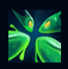
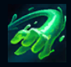
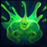
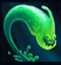
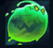

Zac
| Zac The Secret Weapon | |
|---|---|
| Release date | 29.03.2013 |
| Class | Vanguard |
| Positions | Jungle,Top,Support |
| Resource | Health costs |
| Range type | Melee |
| Adaptive type | Magic |
| Base statistics | |||
| Health | 615 – 2230 | Resource | N/A (Uses Health) |
| Health regen. | 8 – 16.5 |
Resource regen. | N/A |
| Armor | 33 – 92.5 | Attack damage | 60 – 117.8 |
| Magic resist. | 32 – 53.25 | Crit. damage | 175% |
| Move. speed | 340 | Attack range | 175 |
Zac a fost creat când niște reziduuri toxice s-au deversat dintr-un bazin chimtech și s-au acumulat într-o peșteră izolată aflată în adâncurile Haznalei din Zaun. În ciuda originilor lui umile de mâzgă primitivă, Zac s-a dezvoltat și a devenit o ființă conștientă ce locuiește în țevile orașului, din care iese uneori pentru a-i ajuta pe cei slabi sau a repara infrastructura părăginită din Zaun. |  |
DIVIZIUNE CELULARĂ De fiecare dată când Zac lovește un adversar cu o abilitate, aruncă o bucată din el care poate fi reabsorbită pentru a-i reface nivelul vieții. Atunci când suferă daune letale, Zac se împarte în 4 mici picături care încearcă să se recombine. Dacă vreo picătură supraviețuiește, acesta va învia cu o anumită proporție din viață, în funcție de nivelul de viață al picăturilor care supraviețuiesc. Fiecare picătură are un anumit procentaj din nivelul maxim de viață, armură și rezistență la magie ale lui Zac. Această abilitate are un timp de reactivare de 5 minute. |
||
|---|---|---|---|---|
 |
LOVITURI ELASTICE Zac își întinde un braț, prinzând un inamic. Dacă atacă un alt inamic, aruncă țintele una spre cealaltă. |
|||
 |
MATERIE INSTABILĂ Zac explodează spre inamicii din apropiere, provocându-le daune magice egale cu un procent din viața lor maximă. |
|||
|  |
PRAȘTIE Zac își înfige mâinile în pământ și se întinde, aruncându-se în față. |
|||
 |
SĂ SĂRIM! Zac sare de patru ori, aruncând în sus inamicii loviți și încetinindu-i. |